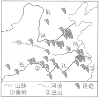

2019年北京市中考地理真题 · 选择题 第6、7、8、9、10题
如图为小明同学观赏“金光穿洞”后发的朋友圈截图和他手绘的颐和园游览图。读图，完成第2﹣6题。

6．看了小明的朋友圈，小敏也计划去颐和园，为尽快到达十七孔桥，他应把导航目的地设置为（ ）
A．北宫门B．东宫门C．新建宫门D．南如意门
读万卷书，行万里路。“诗仙”李白不仅是浪漫主义诗人，也是个“旅行者”。在旅行过程中写下了许多美丽的诗篇。如图为李白行走足迹示意图。读图，完成第7﹣9题。

7．李白的足迹多在我国（ ）
A．地势的第一级阶梯B．季风气候显著的地区
C．秦岭一淮河以北地区D．少数民族集中分布区
8．诗句“两岸猿声啼不住，轻舟已过万重山”描绘的景观位于（ ）
A．长江中上游B．长江下游C．淮河下游D．黄河中下游
9．诗句“蜀道之难，难于上青天”反映的是（ ）
A．四川省地形崎岖B．山西省交通不便
C．云南省位于边疆D．贵州省晴天较多
如图是反映新中国成立以来不同时期的人口问题或人口政策的一组漫画。读图，完成第10﹣12题。

10．自20世纪70年代开始，我国将计划生育作为基本国策。当时提倡一对夫妻生育一个孩子，是为了（ ）
A．缓解人口老龄化问题B．解决人口分布不均问题
C．解决劳动力不足问题D．缓解人口增长过快问题